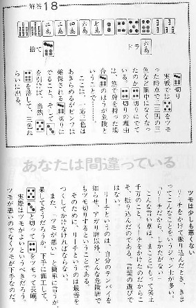

という衝撃的なタイトルの本。昭和61年に出版されたものであるが、先日、本屋へぶらりと立ち寄ったところ、新装版を見かけた。
（おお、懐かしい）と思ってまた購入すると共に、（あ、書談でこの本を紹介してない。それどころか戦術書ベスト10にも入れてないなんて....）と思った次第。
筆者はいまでも月刊プロ麻雀に「麻雀バカ一代」というタイトル（タイトル名は何どか変更になっている）のコラムを長期連載している田中健次郎という人。
「麻雀バカ一代」は日記風のドキュメントであるが、読んでいると著者の体調はかなり思わしくないようだ。それでも麻雀にあけくれているようなので、人ごとながら「大丈夫かいな....」と思うくらい。もっともこの本の初版を出版した昭和60年頃は、元気溌剌であったことは間違いないが。
中身は、全編、見開きの左ページの上部に何切る的な牌姿を上げ、下段に戦術論を記している。
次の見開きの右ページ上段には、前ページ上段の回答とにその理由を記し、下段には、マナーのいろいろが記述してあるという体裁。

全編、妙手解説の連続とは行かないが、基本的にしっかりしているまた各戦術論も読み応えがある。それだけでもオススメであるが、この本の素晴らしいところはそれだけでない。
全編を通じて、右ページの下段にある「あなたは間違っている」という、この本のタイトルを小見出しにした、マナー・ルール・ゲームに対する考え方を述べた部分。
本のタイトルの「あなたは間違っている」は、読者の何切る選択に対しての意味も含んでいるんだろうけれど、実はこっちがメイン。そしてこれがまた素晴らしい。
いわく
「観戦者にもマナーがある」
「イカサマ師はカッコウも悪い」
「姿勢も勝負に影響する」
「解説はするな、聞くな」
「１人前と思ったら進歩しない」
どれをとっても、まことにごもっともで、戦術書というより、マナーを身につける本としても、大いにオススメしたい。そんな中でも気に入っているのが、「放銃して分かっていた、と言うな」というコラム。
むか〜し大きな手に放銃した奴が、「俺もいい手だったから勝負した」と言ったことがある。仲間内だったので、「そりゃお前、悪い手で勝負するのは吉外だ」と返したことがある。（_ _； それとどことなく共通していて、大いに我が意を得たりの思いだった。
いずれにしてもこれほどの本、そうそうは出版されない。新装本としていま書店に並んでいるので、ぜひ一読をオススメする次第である。
話は前後するが、この田中健次郎という人には、ちと思い出がある。たしか昭和41，2年頃、日本麻雀道連盟（略称・道連盟）というリーチ麻雀団体ができた（村石利夫会長）。当時σ(-_-)は日本麻雀連盟（略称・日雀連）という団体に属していた。
日雀連は二十二麻雀であったがリーチ麻雀も好きだったので、当時飯田橋（だったかな？）にあった道連盟本部まで腕試しも兼ねて出掛けた。本部道場について、そこにいた人に「日雀連会員の浅見といいます。打たさせてくれるでしょうか」と聞いた。
「ああ、いいですよ。どうぞ」という返事のあと（あとで分かったが、それが村石利夫さんだった）、適当にメンバーを組んでくれた。３半荘くらい打った。その最初のゲームのとき、１筒に“田
中 健 次郎”と書いてあるのを見つけた。
「これなんですか？」と聞くと、「あぁ、それはあの人の名前だよ」と、奥の方を指さした。みると、やせ形のヒョロッとした人が立っている。
「ふ〜ん」と分かったような分からないような顔をしていると、「これは、あの人の特注牌なんだ」
とは言うものの、どうやら名前が彫ってあるだけで、別に１筒をカンしたりしてもご祝儀がでるわけでもないらしい。
「あの人は強いんだよ〜」
「ふ〜ん」
で、そのときは終わり。
それから何回か通ううち一言三言は交わしたが、残念ながらは打つ機会はなかった。ひょっとして「打ちたい」と言えば打ってくれたかも知れないけれど、その時は特にそういう気持ちがなかった。それより村石さんと、話をする機会が多かった。
そのとき村石さんに「道連盟に来ませんか」と誘われたが、そのときはまだ二十二麻雀を一所懸命やっていたときだったので曖昧な返事で済ましてしまった。
田中さんとの思い出話しといってもそれだけのことではあるが、やはり何もなかった人よりは親しみを感じる。
昭和50年頃、自分も１筒に家紋入りの麻雀牌をつくった。実はこれ、あのとき田中さんの１筒を見たせいである。
|